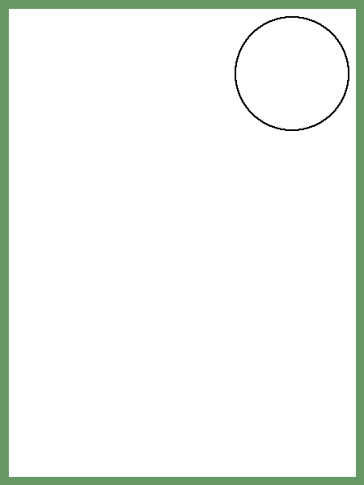
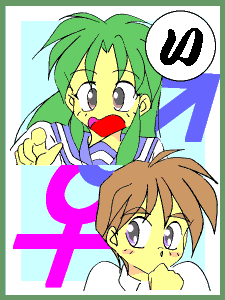

−少年少女文庫・５００万Ｈｉｔ記念イベント「ＴＳいろはがるた」のページ−
絵師さん募集中！ 「ＴＳいろはがるた」の絵札を描いてくださる絵師さんを募集しています。 下記の読み句に合わせたイラストを描いていただけないでしょうか？ 大きさは４５０×６００ピクセル（掲載時には５０％縮小します）でお願いします。 イラストの宛て先はこちらへ。タイトルの先頭に必ず［かるた］とつけてください。 締め切りなどは特にありません。それでは、よろしくお願いします。   |
（ジャージレッドさんの句は連作になっていますので、通して詠むと味わい深いです）
−い−
「いれかわり ボクのめのまえ ボクがいる （入れ替わり ボクの目の前 ボクがいる）」 ＭＯＮＤＯ
「いったでしょ このまほうじん ちかづくな （言ったでしょ この魔法陣 近づくな）」 ジャージレッドさん
「いつのひか おとこにもどると かきぞめる （いつの日か 「男に戻る」と 書き初める）」 南文堂さん下の句 … 「だけどかぞくは じゃまをするから （だけど家族は 邪魔をするから）」
−ろ−
「ろんよりしょうこで むねをもむ （論より証拠で 胸をもむ）」 ＭＯＮＤＯ
「ろんよりも みてみなさいな このかがみ （論よりも 見てみなさいな この鏡）」 ジャージレッドさん
「ろくでなし おれとおまえは ともだちだ （ろくでなし！ 俺とお前は 友達だ！）」 南文堂さん下の句 … 「へるもんじゃなし しんゆうだろう （減るもんじゃ無し 親友だろう？）」
−は−
「はなぢだします じぶんのぬうど （鼻血出します 自分のヌード）」 ＭＯＮＤＯ
「はんがあに かかるせいふく なやみのたね （ハンガーに 掛かる制服 悩みの種）」 思案の六ぽさん
「はてへんだ かがみのなかに おんなのこ （はて変だ 鏡の中に 女の子）」 ジャージレッドさん
「ははがいう じつはむすめが ほしかった （母が言う 「実は娘が欲しかった」）」 南文堂さん下の句 … 「きせかえにんぎょう したいだけだろ （着せ替え人形 したいだけだろ）」
−に−
「にんぽうで てぃーえすするのは じゃどうかな （忍法で ＴＳするのは 邪道かな）」 電波妖精さん
「にあうから とにかくふくを きがえてよ （似合うから とにかく服を 着替えてよ）」 ジャージレッドさん
「にんげんは おとことおんな はんはんだ （人間は 男と女 半々だ）」 南文堂さん下の句 … 「それでなっとく しろというのか （それで納得 しろというのか？）」
−ほ−
「ほんとうは おとこなんだと しょうじょいい （本当は 男なんだと 少女言い）」 思案の六ぽさん
「ほんとうだ せえらあふくが にあってる （本当だ セーラー服が 似合ってる）」 ジャージレッドさん
「ほんとうは うれしいんだろ そのからだ （本当は 嬉しいんだろ？ その身体）」 南文堂さん下の句 … 「それじゃあいちど おまえがなれよ （それじゃあ一度 お前がなれよ）」
−へ−
「へんしんし おんなのからだ いまのぼく （変身し 女の身体 今の僕）」 ジャージレッドさん
「へりくつも じっせんすれば りっぱだろ （屁理屈も 実践すれば立派だろ？）」 南文堂さん下の句 … 「そんなりゆうで おれのからだを （そんな理由で 俺の身体を！？）」
−と−
「ともにもえた ともにきょうから もえられる （共に燃えた 友に今日から 萌えられる）」 あっぴぃさん
「とうさんは こんなむすめが ほしかった （父さんは こんな娘が 欲しかった）」 ジャージレッドさん
「とりあえず さわってみるのが おとこでしょ （とりあえず 触ってみるのが 男でしょ）」 南文堂さん
「とりあえず ふくをきろよと しゃつわたす （とりあえず 服を着ろよと シャツ渡す）」 南文堂さん下の句 … 「さきがこすれて へんなきぶんだ （先が擦れて 変な気分だ）」
−ち−
「ちいさいの かのじょのぶらつけ しっとされ （「小さいの？」 彼女のブラ着け 嫉妬され）」 ｋａｇｅｒｏｕ６さん
「ちくびたち すれるかいかん これはいい （乳首立ち 擦れる快感 これはいい）」 ジャージレッドさん
「ちまような おれはおとこだ めをさませ （血迷うな 俺は男だ 目を覚ませ！）」 南文堂さん下の句 … 「いいやおまえは りっぱなおんな （いいやおまえは 立派な女）」
−り−
「りぼんして かみをまとめて いざとうこう （リボンして 髪をまとめて いざ登校）」 ジャージレッドさん
「りっぱねと おさななじみが むねをもむ （「立派ね」と 幼なじみが 胸を揉む）」 南文堂さん
「りっぱだな これがおれので なかったら （立派だな これが俺ので なかったら）」 南文堂さん下の句 … 「ちいさいよりも いいだろう （小さいよりも いいだろう？）」
−ぬ−
「ぬりぬりと くちべにをぬる はまります （ぬりぬりと 口紅を塗る はまります）」 ジャージレッドさん
「ぬらないと ひやけになると りきせつし （塗らないと 日焼けになると力説し）」 南文堂さん下の句 … 「そのりょうのてが いやらしい （その両の手が いやらしい）」
−る−
「るんるんと でえとのあいて おとこです （ルンルンと デートの相手 男です）」 ジャージレッドさん
「るいびとん ぐっちえるめす なんじゃそれ （ルイ・ビトン グッチ エルメス なんじゃそれ？）」 南文堂さん下の句 … 「ぶらんどしらなきゃ はじをかく （ブランド知らなきゃ 恥をかく）」
−を−
「をとめのみ かげにかくれる こいごころ （乙女の身 影に隠れる 恋心）」 ←さん
下の句 … 「とものきずなに おもいとどかず （友の絆に 思い届かず）」
「をいまてよ きづいたとたん おちこんで （をい待てよ 気づいた途端 落ち込んで）」 ジャージレッドさん
「をいをいと だれかつっこみ いれてくれ （をいをいと 誰かツッコミ 入れてくれ）」 南文堂さん下の句 … 「ぼうそうできるは わかいうちだけ （暴走できるは 若いうちだけ）」
−わ−
「わたしいま きょねんのぼくを おもいだす （わたし今 去年のボクを 思い出す）」 青太郎さん
「わがみほれ これじゃまるで なるしすと （我が身惚れ これじゃまるで ナルシスト）」 よっすぃーさん
「わきげそり こんなことまで やるんだね （脇毛剃り こんなことまで やるんだね）」 ジャージレッドさん
「わすれてた わたしほんとは おとこじゃん （忘れてた！ 私 ホントは男じゃん！）」 Ｋａｒｄｙさん
「わかってる はずだったのに なみだでる （解ってる…はずだったのに 涙出る）」 Ｋａｒｄｙさん
「わかってる ゆめじゃないのは わかってる （わかってる 夢じゃないのはわかってる）」 南文堂さん下の句 … 「そろそろあきらめ なじんだら （そろそろ諦め 馴染んだら？）」
−か−
「かがみみて あれがないのに きづいたよ （鏡見て アレがないのに 気づいたよ）」 電波妖精さん
「かわごろも きつつわがみは びじょになる （皮衣 着つつ我が身は 美女になる）」 よしおかさん
「からだまげ やわらかすぎて かんどうし （身体曲げ 柔らかすぎて 感動し）」 ジャージレッドさん
「かわいいと いわれてびみょう いまのぼく （「かわいい」と 言われて微妙 今の僕）」 南文堂さん下の句 … 「じょせいかすすんだ しょうこだね （女性化進んだ 証拠だね）」
−よ−
「よがあけて すがたみまわし ゆめじゃない （夜が明けて 姿見回し 「夢じゃない……（涙）」）」 Ｋａｒｄｙさん
「よっきゅうが うごかすみぎて ちちをもむ （欲求が 動かす右手 乳を揉む）」 ジャージレッドさん
「よそゆきと ごすろりきせる おれのあね （よそゆきと ゴスロリ着せる 俺の姉）」 南文堂さん下の句 … 「あねよりにあう うとましさ （姉より似合う 疎ましさ）」
−た−
「たちまちに いまのからだに じゅんのうし （たちまちに 今の身体に 順応し）」 ジャージレッドさん
「たいへんだ みじたくだけで おおさわぎ （大変だ 身支度だけで 大騒ぎ）」 南文堂さん下の句 … 「そろそろぶらは じぶんでつけて （そろそろブラは 自分でつけて）」
−れ−
「れんざんの ようなちぶさが むねのうえ （連山の ような乳房が 胸の上）」 ジャージレッドさん
「れずりたい おさななじみが からかって （レズりたい？ 幼なじみが からかって）」 南文堂さん下の句 … 「きみがいいなら いいけどね （君がいいなら いいけどね）」
−そ−
「そんなはず ないとひていも むなしくて （そんなはず ないと否定も むなしくて）」 ジャージレッドさん
「それなりに なじんでしまう だめなおれ （それなりに 馴染んでしまう 駄目な俺）」 南文堂さん下の句 … 「てきおうりょくが あるだけよ （適応力が あるだけよ）」
−つ−
「つきのもの くるとおんなと おもいしる （月のもの 来ると女と 思い知る）」 城弾さん
「つぎはこれ つぎつぎくるよ おんなもの （次はこれ 次々来るよ 女物（の服））」 鈴奈さん
「つらいんだ とくにふつかめ はらいたい （つらいんだ 特に二日目 腹痛い）」 ジャージレッドさん
「ついてない こかんもうんも ついてない （ついてない 股間も運もついてない）」 南文堂さん下の句 … 「かわりにむねに ついている （代わりに胸に ついている）」
−ね−
「ねえちゃんと よばれてまわり きょろきょろと （姉ちゃんと 呼ばれてまわり きょろきょろと）」 ジャージレッドさん
「ねこがいい たちでもいいよ わたしはね （ネコがいい？ タチでもいいよ 私はね）」 南文堂さん下の句 … 「なんのはなしだ わからんぞ （何の話だ？ わからんぞ）」
−な−
「な、ないと さけぶかがみのなかのびじょ （「な、ないっ！」と 叫ぶ鏡の中の美女）」 よしおかさん
「なみだぐみ おんなのぶきを てにいれた （涙ぐみ 女の武器を 手に入れた）」 ジャージレッドさん
「ながいかみ きるなととめる みうちかな （長い髪 「切るな！」と止める 身内かな）」 ＭＯＮＤＯ
「なんでかな じょしのしせんが むねをつく （何でかな？ 女子の視線が 胸を突く）」 南文堂さん下の句 … 「そのむねはんそく おとこのくせに （その胸、反則！ 男の癖に！）」
−ら−
「らいばるが いつのまにやら こいびとに （ライバルが いつの間にやら 恋人に）」 ｋａｇｅｒｏｕ６さん
「らっきーだ れでぃいすでいだ はんがくだ （ラッキーだ レディースデーだ 半額だ）」 ジャージレッドさん
「らむちゃんの こすぷれするな ばかあにき （ラムちゃんの コスプレするな バカ兄貴）」 南文堂さん下の句 … 「せっかくなんだし たのしまなそんそん （折角なんだし 楽しまな損損）」
−む−
「むかしおもい おとすめのさき をとこしゅう （昔想い 落とす目の先 男衆）」 Ｋａｒｄｙさん
「むねをはり つきだすちぶさ じまんかも （胸を張り 突き出す乳房 自慢かも）」 ジャージレッドさん
「むねをもむ べつにそだてる わけじゃない （胸を揉む 別に育てる わけじゃない）」 南文堂さん下の句 … 「おおきいぶらは いいのがないよ （大きいブラは いいのがないよ）」
−う−
「うたいます ひびくそぷらの からおけや （歌います 響くソプラノ カラオケ屋）」 ジャージレッドさん
「ういういしい はじらうあのこに くびったけ （初々しい 恥らうあの娘に くびったけ）」 南文堂さん下の句 … 「だれもおとこと おもわない （誰も男と 思わない）」
−ゐ−（い、うぃ）
「ゐーくでぃ じょしせいふくに はじらいて （ウィークデイ 女子制服に 羞じらいて）」 死郎さん
「ゐませんと こたえるかのじょ とうのかれ （居ませんと 答える彼女 当の彼）」 夜夢さん
「ゐきますか ひきょうおんなゆ いざまいる （行きますか 秘境女湯 いざ参る）」 ジャージレッドさん
「ゐもうとよ ほしけりゃやるよ こんなむね （妹よ 欲しけりゃやるよ こんな胸）」 南文堂さん下の句 … 「おにいちゃんのばか ぐれてやる （お兄ちゃんのバカ！ ぐれてやる）」
−の−
「のきのした すけるぶらじゃあ あまやどり （軒の下 透けるブラジャー 雨宿り）」 ジャージレッドさん
「のぞくなよ いちおういまは おんなのこ （覗くなよ 一応今は 女の子）」 南文堂さん下の句 … 「けちけちするな こころのともよ （ケチケチするな 心の友よ）」
−お−
「おれという そのこえみょうに にあわない （俺と言う その声妙に 似合わない）」 ジャージレッドさん
「おっぱいを うえからみても つまらない （オッパイを 上から見ても つまらない）」 南文堂さん下の句 … 「こういしつでは みほうだいだろ （更衣室では 見放題だろ）」
−く−
「くちさびし むかしこおひい いまけえき （口寂し 昔コーヒー 今ケーキ）」 ジャージレッドさん
「くちべにを ひくとはおれも おちたもの （口紅を 引くとは俺も 落ちたもの）」 南文堂さん下の句 … 「おんなのぶきよ たしなみよ （女の武器よ 嗜みよ）」
−や−
「やっとでた べんぴつらいな おんなのこ （やっと出た 便秘つらいな 女の子）」 ジャージレッドさん
「やめてくれ ひとをおもちゃに しないでよ （やめてくれ！ 人をおもちゃに しないでよ）」 南文堂さん下の句 … 「いいえこれは かぞくのとっけん （いいえ！ これは家族の特権）」
−ま−
「まほうつかい さいしょの へんしん てぃーえすかい （魔法使い 最初の 変身 ＴＳかい）」 ＤＥＫＯＩさん
「まほうやく もどれるのかな のんだなら （魔法薬 戻れるのかな 飲んだなら）」 ジャージレッドさん
「まんがかよ こんなげんじつ みとめない （漫画かよ？ こんな現実 認めない）」 南文堂さん下の句 … 「しょうがないでしょ しょうせつだもの （しょうがないでしょ 小説だもの）」
−け−
「けっこんの いめえじすでに およめさん （結婚の イメージ既に お嫁さん）」 ジャージレッドさん
「けいこする おんなことばを けいこする （稽古する 女言葉を 稽古する）」 南文堂さん下の句 … 「てんこうぜんやに おそいって （転校前夜に 遅いって）」
−ふ−
「ふくかぜに そっとおさえる ふくのすそ （吹く風に そっと押さえる 服の裾）」 Plantainさん
「ふきげんね もしかしていま あれなのね （不機嫌ね もしかして今 アレなのね）」 ジャージレッドさん
「ぶらじゃあを つけてとおのく わがいしき（ブラジャーを 着けて遠のく 我が意識）」 ＭＯＮＤＯ
「ふくらみが したからうえに いどうする （膨らみが 下から上に 移動する）」 南文堂さん下の句 … 「かずもりょうも にばいだな （数も量も 二倍だな）」
−こ−
「これがボク かがみのなかに びしょうじょが （これがボク！？ 鏡の中に 美少女が）」 死郎さん
「こっちゃうよ ちちをもむより かたもんで （こっちゃうよ 乳を揉むより 肩揉んで）」 ジャージレッドさん
「こえがへん しかいもへんだ なんなんだ （声が変？ 視界も変だ なんなんだ！？）」 南文堂さん下の句 … 「このかいわいじゃ せつめいふよう （この界隈じゃ 説明不要♪）」
−え−
「えんりょなく おんなともだち むねさわる （遠慮無く 女友達 胸さわる）」 ジャージレッドさん
「えっこれが ぼくだというの しんじない （え？ これが 僕だというの？ 信じない）」 南文堂さん下の句 … 「あまいげんじつ おしえてあげる （甘い現実 教えてあげる）」
−て−
「てぃーえすは まっどかがくしゃの とくいわざ （ＴＳは マッド科学者の 得意技）」 あっぴぃさん
「てほどきを うけてはつぶら ほっくしめ （手ほどきを 受けて初ブラ ホック締め）」 ジャージレッドさん
「てぐすねを ひいてまってる どうめいぐん （手ぐすねを 引いて待ってる 同盟軍（家族たち））」 南文堂さん下の句 … 「てぃえすっこは おもちゃです （ＴＳっ娘は おもちゃです）」
−あ−
「あっとむきあい ゆびさすふたり （「あ！」と向き合い 指差す二人）」 よしおかさん
「あついはぐ せまるあいては わがあねか （熱いハグ 迫る相手は 我が姉か）」 ジャージレッドさん
「あねのふく まさかじぶんが きようとは （姉の服 まさか自分が 着ようとは）」 南文堂さん下の句 … 「ばざーにだすてま はぶけたわ （バザーに出す手間 省けたわ）」
−さ−
「さむいあし それもそのはず なまあしだ （寒い足 それもそのはず 生足だ）」 ジャージレッドさん
「さこつがね いろっぽいんだ おかしいね （鎖骨がね 色っぽいんだ おかしいね）」 南文堂さん下の句 … 「そろそろげんじつ みつめたら （そろそろ現実 見つめたら？）」
−き−
「きせかえが だんだん こすぷれしょーになり （着せ替えが 段々 コスプレショーになり）」 鈴奈さん
「きもちいい はずなんだけど でもこわい （気持ちいい はずなんだけど でも怖い）」 ジャージレッドさん
「きみこいし きみがおんなに なってもね （君恋し 君が女に なってもね）」 南文堂さん下の句 … 「かわらぬあいは こえるもの （変わらぬ愛は 超えるもの）」
−ゆ−
「ゆうきだし かうよかわいい らんじぇりい （勇気出し 買うよかわいい ランジェリー）」 ジャージレッドさん
「ゆめじゃない ほっぺつねって めがさめる （夢じゃない ほっぺつねって 目が覚める）」 南文堂さん下の句 … 「ざんねん べつのところを （残念！ 別のところを（放送禁止））」
−め−
「めんずひん すてられなくて はやにねん （メンズ品 捨てられなくて はや２年）」 ジャージレッドさん
「めをみはる びしょうじょになる このおれが （目を見張る 美少女になる この俺が？）」 南文堂さん下の句 … 「それがよのため ひとのため （それが世のため 人のため）」
−み−
「みるくのみ いずれだすかと ふとおもう （ミルク飲み いずれ出すかと ふと思う）」 ジャージレッドさん
「みためはね あまりむかしと かわってない （見た目はね あまり昔と 変わってない）」 南文堂さん下の句 … 「なかみはかなり かわってる （中身はかなり変わってる）」
−し−
「しかたない うけいれるしか ないかもね （仕方ない 受け入れるしか ないかもね）」 ジャージレッドさん
「しゃべらなきゃ かけねなしだよ もったいない （喋らなきゃ 掛け値なしだよ もったいない）」 南文堂さん下の句 … 「おれはおとこと いってるだろう （俺は男と 言ってるだろう？）」
−ゑ（え、うぇ）−
「ゑるかむと ゆりのせかいに さそわれる （ウェルカムと 百合の世界に 誘われる）」 死郎さん
「ゑびすがお うかぶははみる もとむすこ （恵比須顔 浮かぶ母見る 元息子）」 夜夢さん
「ゑろいこと にんしんこわく ちゅうちょして （エロいこと 妊娠怖く ちゅうちょして）」 ジャージレッドさん
「ゑしのひと かわいくかいて いまのぼく （絵師の人 かわいく描いて 今の僕）」 南文堂さん下の句 … 「もえじにするのは ほんもうです （萌え死にするのは 本望です）」
−ひ−
「ひめはじめ するならやっぱ しゅびなのか （姫始め するならやっぱ 守備なのか）」 ジャージレッドさん
「ひきつるよ あいのこくはく おとこから （引きつるよ 愛の告白 男から）」 南文堂さん下の句 … 「ゆうひにむかって だっしゅれんぱつ （夕日に向かって ダッシュ連発）」
−も−
「もどれるわ まほうなかのじょ ぼくにいい （戻れるわ 魔法な彼女 僕に言い）」 ジャージレッドさん
「もどれない ずっとこのまま おんなのこ （戻れない？ ずっとこのまま女の子！？）」 あっぴぃさん
「もっこりが なつかしいなと わかくさのおか （もっこりが 懐かしいなと 若草の丘）」 南文堂さん
−せ−
「せっかくさ なれてきたのに いまさらか （せっかくさ 慣れてきたのに いまさらか）」 ジャージレッドさん
「せーらーを じぶんがきるとは つゆしらず （セーラーを 自分がきるとは 露知らず）」 南文堂さん下の句 … 「あのとききづいて いたのなら （あの時気づいて いたのなら）」
−す−
「すかあとは すうすうするし はずかしい （スカートは スースーするし 恥ずかしい）」 この市場さん
「すぐきめて ちゃんすはこんや いちどきり （すぐ決めて チャンスは今夜 一度きり）」 ジャージレッドさん
「すかーとが きになりうまく あるけない （スカートが 気になり上手く 歩けない）」 南文堂さん下の句 … 「もじもじしてると ちこくするよ （もじもじしてると 遅刻するよ）」
−ん−
「んなあほな あさめざめたら きょにゅうとは （んなアホな！ 朝目覚めたら 巨乳とはっ）」 ひのひとさん
下の句 … 「たぶんあねきの しわざとおもう （多分姉貴の 仕業と思う）」
「んんなやむ もどりたいはず だったのに （んん悩む 戻りたいはず だったのに）」 ジャージレッドさん